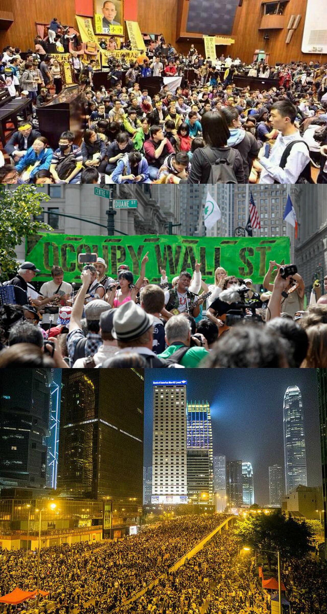
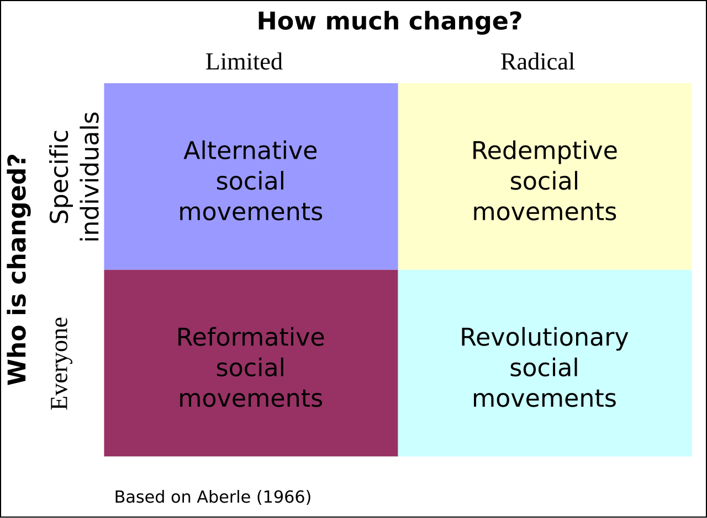
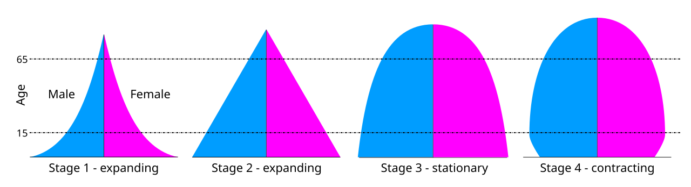
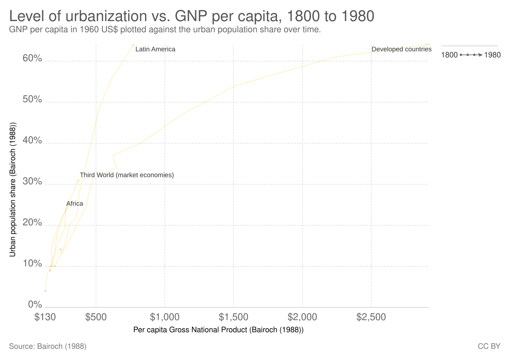
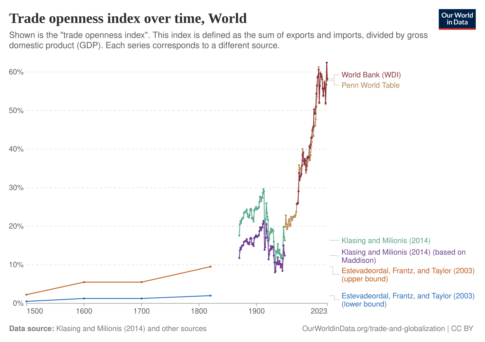

Social Change & Movements
Societies never sit still. The language you speak, the work you do, the family you were born into, and the rights you take for granted all look different than they did a century ago — and they will look different again. This chapter is about social change: how it happens, who drives it, and how sociologists explain it. We start with the crowd in the street and the rumor that races through a town, move to the organized movements that deliberately try to reshape the world, and end with the two great engines of modern change — modernization and globalization — that are remaking every society on Earth at once.
By the end of this chapter you can
- Define collective behavior and distinguish casual, conventional, expressive, and acting crowds, along with mobs and mass behavior.
- Compare the contagion, convergence, and emergent-norm explanations of why crowds act as they do.
- Define a social movement and classify movements using Aberle’s four types.
- Trace the four stages a movement typically passes through, from emergence to decline.
- Contrast relative-deprivation, resource-mobilization, framing, and new-social-movement theories.
- Explain how technology, population, and the environment drive change, and apply Ogburn’s idea of cultural lag.
- Summarize modernization theory and the conflict-based critiques offered by dependency and world-systems theory.
- Identify the causes and consequences of globalization and read it through the three sociological paradigms.
Section 1Collective behavior: crowds, mobs, and mass behavior

What collective behavior is
Most of social life is institutional — patterned, expected, governed by clear norms. You know how to behave in a classroom, a checkout line, or a funeral because the script is already written. Collective behavior is what happens outside that script: relatively spontaneous, short-lived, loosely structured action by a group responding to a common influence or situation. The sociologist Herbert Blumer, building on the Chicago School of Robert Park, gave the field its name and its core idea — that in these moments people improvise new ways of acting together before any settled institution tells them how. A stadium doing the wave, a town swept by a rumor, shoppers stampeding a doorbuster sale, and a neighborhood pouring into the street after a verdict are all collective behavior, even though they look nothing alike.
Kinds of crowds — and the myth of the mad mob
A crowd is simply a temporary gathering of people in close enough proximity to influence one another. Blumer sorted crowds into four kinds. A casual crowd is a loose collection of people who happen to share a space — onlookers around a street performer — with little in common. A conventional crowd gathers for a scheduled, structured purpose, like a lecture audience or churchgoers. An expressive crowd forms around emotional release, such as a concert or a religious revival. An acting crowd is focused on a specific, often intense goal and is capable of aggression. When an acting crowd turns violent and destructive toward a target, we call it a mob; a riot is a more diffuse, longer-lasting eruption of violence with no single focus.
It is tempting to imagine crowds as mindless herds, and the earliest theorist of crowds, Gustave Le Bon, said exactly that. Modern research disagrees. The sociologist Clark McPhail studied thousands of real gatherings and found that people in crowds mostly retain their judgment, cluster with the friends and family they arrived with, and act with more purpose than the “mad mob” image allows. Crowds are not people losing their minds; they are people making new rules on the fly.
Three ways to explain the crowd
Why does a crowd sometimes act as one? Three classic theories compete. Contagion theory (Le Bon) claims the anonymity and emotional intensity of a crowd spread feeling from person to person like a fever, overriding individual restraint. Convergence theory flips the arrow: the crowd does not create the behavior, it gathers people who already shared the impulse, so a violent crowd reflects the tendencies its members brought with them. Emergent-norm theory, developed by Ralph Turner and Lewis Killian, offers a middle path grounded in symbolic interactionism: crowds face ambiguous, unscripted situations, and through interaction they improvise a shared norm that then guides everyone present. This is why two crowds facing the same event can behave completely differently.
| Theory | Where the behavior comes from | Key figure | Weakness |
|---|---|---|---|
| Contagion | Spreads through the crowd; anonymity dissolves self-control | Le Bon | Treats crowds as mindless; overstated by research |
| Convergence | Brought in by the individuals who chose to gather | Allport | Can’t explain behavior members never intended |
| Emergent-norm | Improvised on the spot through interaction | Turner & Killian | Hard to observe the norm forming in real time |
Behavior at a distance: mass behavior
Not all collective behavior needs bodies in one place. Mass behavior is collective behavior among people spread over a wide area who never meet but respond to the same influence. It includes rumor (unverified information passed person to person), fads and fashions, panics and mass hysteria, public opinion, and disaster behavior. Social media has supercharged mass behavior: a rumor that once took weeks to cross a county now circles the planet in minutes, and a fad can consume millions of strangers who share nothing but a feed. Sociologists study these not as trivia but as early tremors — the diffuse, disorganized stirrings from which organized social movements often crystallize.
- Collective behavior is spontaneous, loosely structured group action outside normal institutional scripts.
- Crowds are casual, conventional, expressive, or acting; a violent acting crowd is a mob, a diffuse eruption a riot.
- Contagion, convergence, and emergent-norm theories explain crowd action; emergent-norm best fits the evidence.
- Mass behavior (rumor, fads, panics, public opinion) is collective behavior spread across distance, now accelerated by social media.
Section 2Social movements: types, stages, and theories

From crowd to campaign
A crowd disperses by nightfall; a social movement does not. A social movement is an organized, sustained, collective effort by a large number of people to promote or resist social change. Where collective behavior is spontaneous and fleeting, movements have leaders, goals, an organizational core, and staying power measured in years or decades. The abolition of slavery, women’s suffrage, the labor and civil-rights movements, environmentalism, and the many movements resisting each of these were all deliberate campaigns, not passing crowds. Movements are the single most important way that ordinary people — those without armies or fortunes — force change onto societies that would otherwise leave them out.
Four types of movements
The anthropologist David Aberle classified movements along two questions: how much change do they seek (limited or total), and whom do they target (specific individuals or entire structures). The result is four types. Alterative movements seek limited change in specific individuals — a campaign to get people to drive sober. Redemptive movements seek total change in specific individuals — a religious revival aiming to transform believers completely. Reformative movements seek limited change across a whole society — marriage-equality or clean-air campaigns that alter law without overturning the system. Revolutionary movements seek total change across society — to replace the existing order entirely. Sociologists add other labels, such as resistance (or reactionary) movements that fight to reverse change others have won.
| Type | How much change | Who is targeted | Example |
|---|---|---|---|
| Alterative | Limited | Specific individuals | Anti–drunk-driving campaigns |
| Redemptive | Total | Specific individuals | A religious revival movement |
| Reformative | Limited | Whole society | Environmental or voting-rights reform |
| Revolutionary | Total | Whole society | Movements to replace the political order |
The stages a movement lives through
Movements are not born whole; they mature and age. Drawing on Herbert Blumer and later Charles Tilly, sociologists describe four stages. In emergence (or incipiency), widespread discontent finds no organized outlet yet — people sense that something is wrong. In coalescence, that discontent organizes: leaders emerge, strategy forms, and the movement stages its first public actions and defines its demands. In bureaucratization, the movement builds formal organizations, paid staff, and routines so it can survive beyond its founding excitement. Finally comes decline, which is not necessarily failure: a movement can decline because it succeeded (its goals became law), because it failed, because it was repressed, because it was co-opted by the establishment, or because it went mainstream and its ideas became ordinary common sense.
Four theories of why movements arise and win
Why do movements form, and why do some succeed? Relative-deprivation theory (developed by Ted Gurr and others) argues that movements grow not from absolute misery but from a felt gap between what people believe they deserve and what they actually have — deprivation is relative to expectation, which is why rising conditions can spark revolt. Resource-mobilization theory (John McCarthy and Mayer Zald) shifted attention from grievance to capacity: grievances are everywhere, but movements succeed only when they can mobilize money, members, leadership, media, and organization. Framing theory (David Snow and Robert Benford, extending Erving Goffman’s frame analysis) stresses meaning — movements must package their message so that potential recruits see a problem, assign blame, and believe action can help. New-social-movement theory explains the identity- and quality-of-life movements of recent decades — environmental, LGBTQ, peace, and consumer movements — which pursue recognition and values more than the bread-and-butter economic demands of the old labor movement.
The three paradigms frame the whole subject differently. Structural functionalism sees movements as a society’s response to strain or dysfunction, a pressure valve that restores balance. Conflict theory, following Karl Marx, sees them as the visible edge of struggles over power and resources between dominant and subordinate groups. Symbolic interactionism zooms in on framing and identity — how activists construct shared meanings that turn private complaints into public causes.
- A social movement is organized, sustained, and collective — the opposite of a fleeting crowd.
- Aberle’s four types (alterative, redemptive, reformative, revolutionary) sort movements by amount and target of change.
- Movements pass through emergence, coalescence, bureaucratization, and decline — and decline can mean success.
- Relative deprivation, resource mobilization, framing, and new-social-movement theory each explain a different piece of why movements rise and win.
Section 3Sources of change: technology, population, and the environment

Technology and cultural lag
Movements are one source of change, but three deeper forces reshape every society whether anyone campaigns for it or not. The first is technology. Change spreads through discovery (finding something that already existed), invention (combining knowledge into something new), and diffusion (the spread of an idea or object from one group to another). Technology rarely changes just one thing: the automobile did not only move people faster, it created suburbs, teenagers with independence, and a new geography of work and dating. The sociologist William F. Ogburn named the friction this creates cultural lag — the tendency of material culture (tools, machines) to change faster than non-material culture (laws, norms, ethics), which struggles to catch up. We invent gene editing and facial-recognition systems in a few years but spend decades arguing over the rules for using them. That gap is cultural lag.
Population as an engine of change
The second force is demography — the study of population size and structure, driven by fertility (births), mortality (deaths), and migration (movement). Populations reshape societies as they grow, shrink, and age. The central sociological model here is the demographic transition: as societies industrialize, they move from a stage of high birth and high death rates (slow growth) to one where death rates fall but births stay high (rapid growth), and finally to low birth and low death rates (slow growth again, now with an aging population). Thomas Malthus famously predicted that population would outrun food and end in catastrophe; he underestimated how much technology could raise food production and how much falling fertility would slow growth. Today the sociological worries run the other way, too — toward aging societies with too few workers to support their elders.
| Source of change | Mechanism | Key concept | Everyday example |
|---|---|---|---|
| Technology | Discovery, invention, diffusion | Cultural lag (Ogburn) | Smartphones reshaping attention and work |
| Population | Fertility, mortality, migration | Demographic transition | Aging societies straining pensions |
| Environment | Disasters, depletion, climate | Society–environment feedback | Drought driving migration |
The environment, both cause and consequence
The third force is the environment. Natural events — earthquakes, floods, droughts, pandemics — have always redrawn societies, and environmental sociology studies the two-way street between the natural world and social life. The relationship runs both directions: the environment shapes society (a drought empties farms and fills cities), and society shapes the environment (industrial economies warm the planet). Climate change is the defining case, because it is simultaneously a product of human social organization — industrial capitalism, consumption, fossil-fueled growth — and a driver of future change through rising seas, migration, and conflict. Conflict theorists stress environmental inequality: the societies and communities that contribute least to pollution often suffer its harms first and worst, a pattern the environmental-justice movement was built to fight.
- Change spreads by discovery, invention, and diffusion; cultural lag is non-material culture lagging behind material culture.
- Demography (fertility, mortality, migration) reshapes societies; the demographic transition tracks the shift from high to low birth and death rates.
- Malthus overestimated catastrophe by underrating technology and falling fertility; aging is now a central concern.
- Society and the environment shape each other; climate change and environmental inequality are the era’s defining cases.
Section 4Modernization: theories of a changing society

What modernization means
Modernization is the process by which a society moves from traditional, rural, agricultural forms of life toward industrial, urban, and bureaucratic ones. The founders of sociology were, in a sense, all trying to make sense of this one enormous shift as it swept nineteenth-century Europe. Ferdinand Tönnies described it as a move from Gemeinschaft — small communities bound by personal ties and tradition — to Gesellschaft, large impersonal societies bound by self-interest and contract. Émile Durkheim saw the same shift as a change in the basis of solidarity, from the mechanical solidarity of similar people in simple societies to the organic solidarity of interdependent specialists in complex ones — and warned that rapid change could produce anomie, a breakdown of shared norms. Max Weber saw it as rationalization: the steady replacement of tradition and emotion by calculation, efficiency, and bureaucracy, which he feared would trap us in an “iron cage” of impersonal rules. Karl Marx saw the engine underneath it all as capitalism, driving relentless change while alienating workers from their labor.
Modernization theory and its critics
In the mid-twentieth century these ideas hardened into modernization theory, a functionalist account of why some nations are rich and others poor. Its best-known version, the economist W. W. Rostow’s “stages of economic growth,” pictured every society climbing the same ladder from traditional society to a final age of mass consumption, held back mainly by its own traditional values and lack of technology. The remedy, in this view, is to adopt modern technology, education, and market institutions. Critics from the conflict tradition attacked this as blaming the victim and ignoring history. Dependency theory (associated with Andre Gunder Frank) argued that poor nations are not simply “behind” but were actively underdeveloped by colonialism and by ongoing economic dependence on rich nations. Immanuel Wallerstein’s world-systems theory extended this into a global map of a single capitalist economy divided into a wealthy core, an exploited periphery, and a semi-periphery in between — with wealth flowing from periphery to core by design, not by accident.
| Perspective | Paradigm | Why some nations stay poor | Key figure |
|---|---|---|---|
| Modernization theory | Functionalist | They lag in technology and modern values; they must catch up | Rostow |
| Dependency theory | Conflict | Rich nations underdeveloped them and keep them dependent | Frank |
| World-systems theory | Conflict | One global economy funnels wealth from periphery to core | Wallerstein |
Is modernization one road or many?
The deepest quarrel is whether modernization has a single destination. Modernization theory implies one road that all societies eventually travel — toward a Western-style industrial democracy. Its critics answer that there are multiple modernities: societies can industrialize while keeping distinct religious, family, and political traditions, and “modern” need not mean “Western.” Weber himself was ambivalent, admiring the efficiency of rationalization while mourning what he called the disenchantment of the world — the draining away of mystery, meaning, and the sacred as calculation takes over. Modernization, in the sociological view, is neither pure progress nor pure loss. It trades the warmth and constraint of the small community for the freedom and loneliness of the large society.
- Modernization is the shift from traditional, rural, agrarian life to industrial, urban, bureaucratic life.
- The founders read it as Tönnies’ Gemeinschaft→Gesellschaft, Durkheim’s mechanical→organic solidarity, and Weber’s rationalization and disenchantment.
- Modernization theory (functionalist, Rostow) sees poverty as lagging behind; dependency and world-systems theory (conflict) see it as produced by exploitation.
- The core debate is whether modernization has one destination or multiple modernities.
Section 5Globalization: causes and consequences of a connected world

What globalization is, and what caused it
If modernization asks how a single society changes, globalization asks how societies grow into one another. Globalization is the increasing economic, political, and cultural interconnection and interdependence of the world’s societies — the process by which events, goods, ideas, and people move across national borders with ever less friction. It is not brand new; trade routes have linked distant peoples for millennia. But its recent acceleration has clear causes. Technology — container shipping, jet travel, satellites, and above all the internet — collapsed the cost of moving goods and information. Economic forces — the expansion of capitalism, trade liberalization, and transnational corporations that organize production across dozens of countries — stitched national economies into a single global market. And political arrangements, from trade agreements to international bodies, built the rules that let all of this flow.
The consequences: integration or exploitation?
Whether globalization is good news depends heavily on which paradigm you bring to it. To a functionalist, growing interconnection is broadly integrative and efficient: a global division of labor lets each region do what it does best, spreads technology and prosperity, and knits nations together in webs of mutual dependence that make cooperation rational. To a conflict theorist, the same system looks like exploitation scaled up to the planet — Wallerstein’s core nations and their corporations profiting from cheap labor and raw materials in the periphery, widening the gap between a global rich and a global poor even as some averages rise. Cultural sociologists debate whether globalization produces cultural homogenization — captured by George Ritzer’s McDonaldization, the spread of standardized, efficient, calculable models around the world — or instead a hybrid mixing, sometimes called glocalization, in which global forms are reworked to fit local meanings.
| Paradigm | How it sees globalization | What it emphasizes |
|---|---|---|
| Structural functionalism | Integrative and efficient | Global division of labor, interdependence, spread of technology |
| Conflict theory | Exploitative and unequal | Core vs. periphery, corporate power, widening global inequality |
| Symbolic interactionism | Transformative of everyday life | Shifting identities, mixed cultures, new forms of interaction |
The nation-state and the interactionist view
Globalization also strains the nation-state. When capital, information, and pollution cross borders freely but governments stop at them, national leaders lose some of their grip — a factory can relocate to a cheaper country overnight, and a financial panic or a virus can arrive uninvited. This has fed both new forms of global governance (international organizations, treaties, and transnational activist networks) and a fierce backlash of nationalism and protectionism. At the smallest scale, the symbolic-interactionist lens notices how globalization quietly rewrites daily life: the clothes you wear were designed on one continent and sewn on another, your friendships and identities form across time zones on your phone, and the food, music, and slang you treat as ordinary are the mingled products of a connected world. Globalization is not only a matter of trade balances; it is remaking the texture of ordinary interaction.
- Globalization is the deepening economic, political, and cultural interconnection of the world’s societies.
- Its causes are technological (internet, shipping, travel), economic (capitalism, trade, transnational corporations), and political (trade rules and institutions).
- Functionalists read it as integrative; conflict theorists as exploitative (core vs. periphery); interactionists as reshaping identity and everyday life.
- It weakens the nation-state and drives debates over homogenization (McDonaldization) versus glocalization.
The chapter in one breath
- Collective behavior is spontaneous, loosely structured group action — crowds, mobs, and dispersed mass behavior like rumor and fads — and crowds are far more reasoning than the old “mad mob” image claims.
- Crowd action is explained by contagion, convergence, and (best supported) emergent-norm theory.
- A social movement is organized and sustained; Aberle’s four types classify it, and it passes through emergence, coalescence, bureaucratization, and decline.
- Movements are explained by relative deprivation, resource mobilization, framing, and new-social-movement theory — and grievance alone is never enough.
- Change is driven by technology (with Ogburn’s cultural lag), population (the demographic transition), and the environment (climate change and environmental inequality).
- Modernization is the shift from traditional to industrial society; modernization theory (functionalist) reads global poverty as lag, while dependency and world-systems theory (conflict) read it as exploitation.
- Globalization ties societies together through technology, capitalism, and politics; functionalists, conflict theorists, and interactionists reach three very different verdicts on the same connected world.
ReferenceWords worth knowing
A quick reference for the terms in this chapter — skim it now, or circle back whenever a word trips you up.
- Acting crowd
- A crowd focused on an intense, specific goal and capable of aggression; a violent one aimed at a target is a mob.
- Anomie
- Durkheim’s term for a breakdown of shared norms and moral guidance, common during rapid social change.
- Collective behavior
- Relatively spontaneous, short-lived, loosely structured action by a group responding to a common influence.
- Contagion theory
- Le Bon’s claim that emotion and anonymity spread through a crowd, overriding individual self-control.
- Convergence theory
- The view that a crowd’s behavior reflects the tendencies its members already held before gathering.
- Cultural lag
- Ogburn’s idea that non-material culture (laws, norms) changes more slowly than material culture (technology).
- Demographic transition
- The shift, as societies industrialize, from high birth and death rates to low birth and death rates.
- Dependency theory
- A conflict account holding that rich nations actively underdeveloped poor ones and keep them dependent.
- Diffusion
- The spread of an idea, practice, or object from one group or society to another.
- Emergent-norm theory
- Turner and Killian’s view that crowds improvise a shared norm through interaction in ambiguous situations.
- Framing
- The way a movement packages its message to define a problem, assign blame, and motivate action; rooted in Goffman.
- Gemeinschaft and Gesellschaft
- Tönnies’ contrast between small tradition-bound community and large impersonal, contract-based society.
- Globalization
- The growing economic, political, and cultural interconnection and interdependence of the world’s societies.
- Mass behavior
- Collective behavior among people dispersed over a wide area — rumor, fads, panics, public opinion.
- McDonaldization
- Ritzer’s term for the global spread of standardized, efficient, calculable, and controlled models of organization.
- Modernization
- The process by which a society moves from traditional, rural, agrarian life to industrial, urban, bureaucratic life.
- New social movement theory
- An account of identity- and quality-of-life movements (environmental, LGBTQ, peace) beyond old economic demands.
- Relative deprivation
- A felt gap between what people believe they deserve and what they have, seen as a spark for movements.
- Resource mobilization theory
- McCarthy and Zald’s view that movements succeed by mobilizing money, members, leadership, and organization.
- Social movement
- An organized, sustained, collective effort by many people to promote or resist social change.
- World-systems theory
- Wallerstein’s model of one global capitalist economy split into a wealthy core, exploited periphery, and semi-periphery.